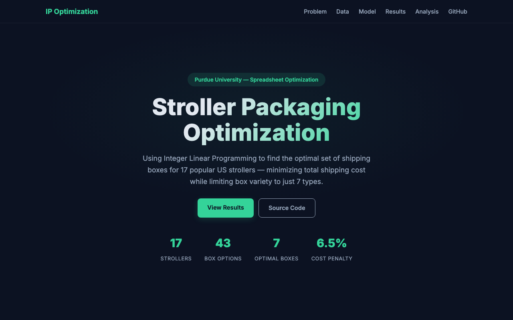
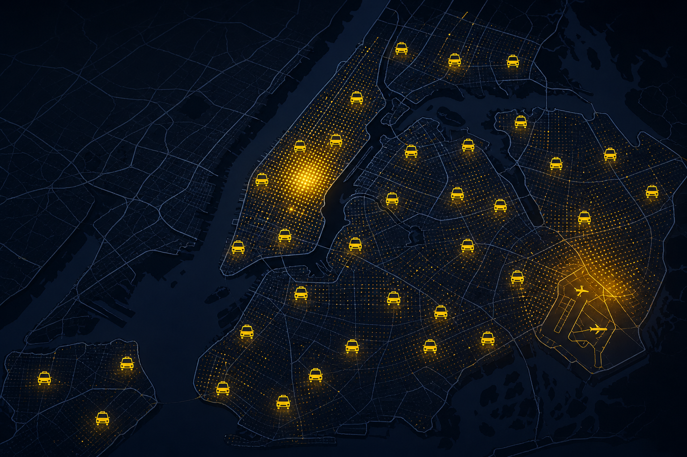
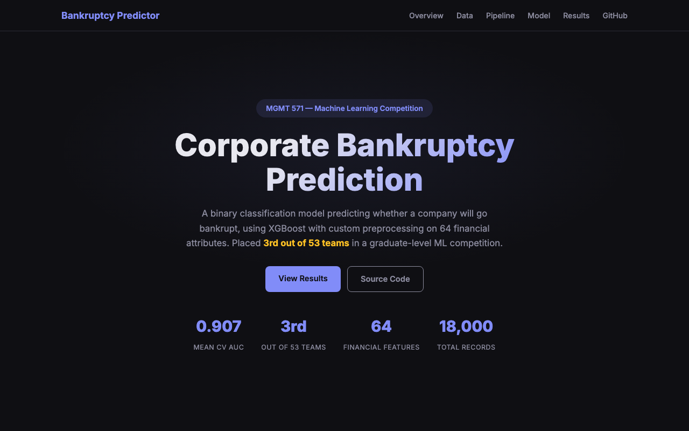

Analysis
Funnel, cohort, and segmentation work that separates a real performance driver from a noisy average.
Data Analyst
I turn customer and operational data into reusable datasets, analytical models, and decision-support tools. The work I like most sits in marketing data analytics, supply chain optimization, and business process automation. I use SQL and Python to find what changed, experimentation to test it, and business intelligence to leave a team with a workflow they can run again.
Currently: open to data analyst roles · Purdue MS Business Analytics
Jambo | Mayacrew | Purdue | Pom Education
SQL · Python · Power BI · pandas · Tableau · Excel · Gurobi · scikit-learn
Analytics and optimization projects, from the question to the decision.

Live demoAn integer program over 43 candidate boxes and 17 products. A 7-box set cut variety 59% while holding the dimensional-weight increase to 6.5%.
View case study →
Live demoZone-level demand and a newsvendor-style positioning model for a 13,000-cab fleet, so capacity sits where trips actually start.
View case study →
GitHubRanked financial distress from messy ratios. Mean AUC 0.907, 3rd of 53 teams in a graduate analytics competition.
View case study →Replaced a global sigmoid with a cohort score on a 30–99 scale, plus a stable performance band for parents and trainers.
View case study →At a glance
I build analytical datasets and models that explain what changed and what to do next — funnel and cohort work on 100K+ events, segmentation on 250K+ customer records, and optimization models that make a packaging or planning tradeoff explicit.
Funnel, cohort, and segmentation work that separates a real performance driver from a noisy average.
Geo-split and multivariate tests with regression-based lift, so a bid or audience change has to earn the spend.
SQL datasets, Power BI, and Python models packaged so a weekly review can act without rebuilding the spreadsheet.
Where I’ve worked and studied.
Data Analyst
Jan 2025 – Aug 2025
M.S. Business Analytics & Information Management
Aug 2025 – Aug 2026
Business Intelligence Analyst
May 2024 – Aug 2024
Deputy Team Lead & Instructor
Jul 2019 – Feb 2022
Outside the spreadsheet — the things I keep coming back to.
I play, and I’m a huge Roger Federer fan. I’m working on his one-handed backhand, his forehand grip, and I even use the same racket.
I try a new burger in every city I visit, across the U.S. and anywhere else the trip takes me.
I’m looking for data analyst and business intelligence roles. Email or LinkedIn both work.
Download Resume ↓